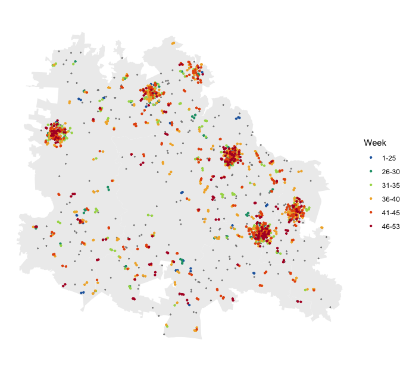

Interacción espacio-temporal: prueba de Knox y cadenas de transmisión
Source:vignettes/knox_test_es.Rmd
knox_test_es.RmdEl dengue lo transmite Aedes aegypti, que vuela distancias
cortas, y el virus tarda días (los periodos de incubación extrínseco e
intrínseco) en pasar de una persona a otra. Por eso, cuando hay
transmisión local, los casos están más cerca en el espacio y en
el tiempo de lo esperado si espacio y tiempo fueran
independientes. La prueba de Knox (Knox 1964) cuenta
los pares de casos cercanos a la vez en el espacio (a menos de
ds metros) y en el tiempo (a menos de dt días)
y compara ese número con su distribución cuando las fechas se permutan
al azar (Monte Carlo). Cada par cercano es un vínculo
espacio-temporal, y los casos vinculados forman las
cadenas de transmisión.
El ejemplo usa sim_dengue, casos geocodificados
simulados de la zona metropolitana de Guadalajara; con
la base geocodificada real los pasos son los mismos.
1. Los casos de una temporada
knox_test() necesita una tabla con las coordenadas
(x, y) y la fecha de inicio de síntomas
(onset):
x <- subset(sim_dengue, ANO == 2024)
x <- data.frame(x = x$long, y = x$lat, onset = x$FEC_INI_SIGNOS_SINT)
nrow(x)
#> [1] 16802. Prueba de Knox
Las ventanas son 400 m (el rango de vuelo de Ae. aegypti más
el movimiento de las personas alrededor de la casa) y 20 días (el tiempo
entre dos casos de la misma cadena); las coordenadas se proyectan
(crs = "+proj=eqc", metros) y la prueba usa 1,000
permutaciones.
res <- knox_test(x = x, crs = "+proj=eqc", dt = 20, ds = 400, sym = 1000,
sp_link = FALSE, planar_coord = FALSE)
res$knox
#> $knox
#> [1] 3875
#>
#> $p_value
#> [1] 0
#>
#> $RR
#> [1] 1.148744-
knox: número de pares de casos cercanos en espacio y tiempo (vínculos espacio-temporales); -
p_value: proporción de las permutaciones con al menos tantos pares; -
RR: razón entre el número de pares observado y el esperado.
Un p_value pequeño (y RR > 1) indica
interacción espacio-temporal: transmisión local.
3. Mapa de las cadenas de transmisión
res$space_time_link tiene una línea por vínculo
(EPSG:4326) y res$x los casos (en las coordenadas
proyectadas). El mapa muestra los vínculos y los casos coloreados por
semana epidemiológica, como lo hace
transmission_chains_map() en un mapa interactivo.
cases <- sf::st_as_sf(res$x, coords = c("x", "y"), crs = "+proj=eqc")
cases <- sf::st_transform(cases, 4326)
cases$week <- cut(lubridate::epiweek(cases$onset), c(0, 25, 30, 35, 40, 45, 53),
labels = c("1-25", "26-30", "31-35", "36-40", "41-45", "46-53"))
linked <- lengths(sf::st_intersects(cases, sf::st_buffer(res$space_time_link, 1))) > 0
loc <- rgeomex::extract_locality(cve_edo = "14",
locality = c("Guadalajara", "Zapopan", "Tlaquepaque", "Tonalá"))
pal <- c("#2166AC", "#1B9E77", "#A6D854", "#F2B134", "#E6550D", "#B2182B")
ggplot() +
geom_sf(data = loc, fill = "grey93", colour = NA) +
geom_sf(data = cases[!linked, ], colour = "grey55", size = 0.3) +
geom_sf(data = res$space_time_link, colour = "grey40", linewidth = 0.25, alpha = 0.6) +
geom_sf(data = cases[linked, ], aes(colour = week), size = 0.8) +
scale_colour_manual(values = pal, name = "Week") +
theme_void()
Vínculos espacio-temporales (400 m, 20 días) de los casos de 2024.
Los casos vinculados (en color) forman las cadenas; los puntos grises
son casos sin vínculo. Con los datos reales,
transmission_chains_map() hace este mapa interactivo
directamente desde la base geocodificada:
transmission_chains_map(geocoded_dataset = sim_dengue,
cve_edo = "14", locality = "Guadalajara",
dengue_cases = "Probable")4. Las cadenas por temporada
by_year <- lapply(2019:2024, function(y) {
d <- subset(sim_dengue, ANO == y)
d <- data.frame(x = d$long, y = d$lat, onset = d$FEC_INI_SIGNOS_SINT)
k <- knox_test(x = d, crs = "+proj=eqc", dt = 20, ds = 400, sym = 999,
sp_link = FALSE, planar_coord = FALSE)$knox
data.frame(year = y, cases = nrow(d), links = k$knox,
RR = round(k$RR, 2), p_value = k$p_value)
})
do.call(rbind, by_year)
#> year cases links RR p_value
#> 1 2019 1413 2370 1.17 0
#> 2 2020 414 318 1.40 0
#> 3 2021 259 257 1.72 0
#> 4 2022 597 624 1.33 0
#> 5 2023 1139 1665 1.27 0
#> 6 2024 1680 3875 1.15 0En las seis temporadas simuladas hay interacción espacio-temporal (p < 0.001); el RR es mayor en los años con pocos casos, cuando los casos que hay están más agrupados en cadenas.